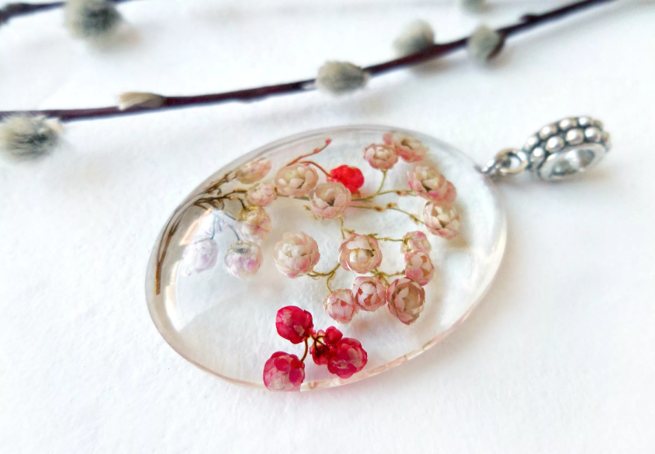
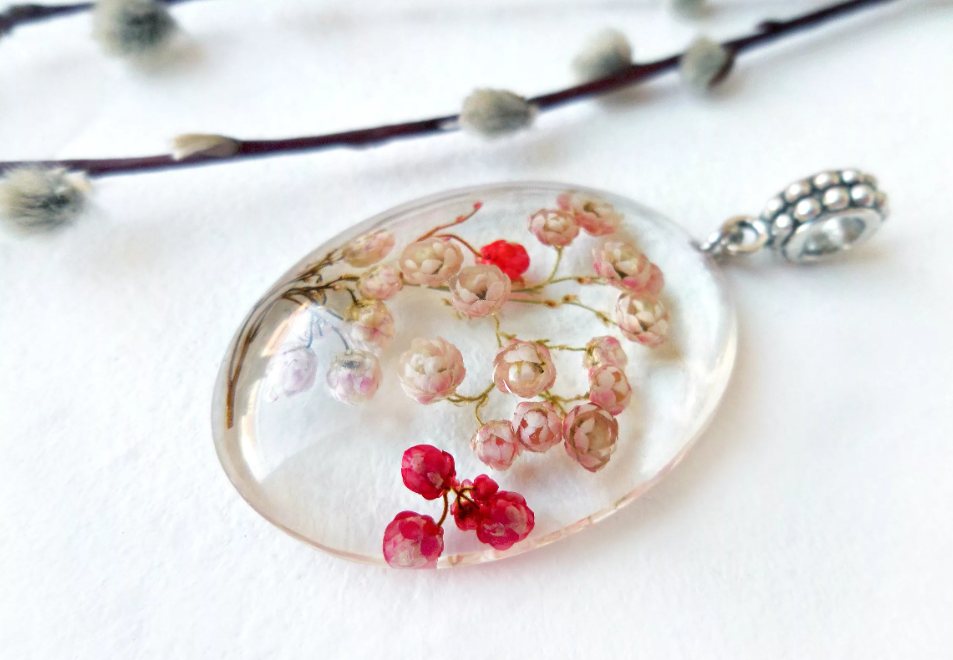
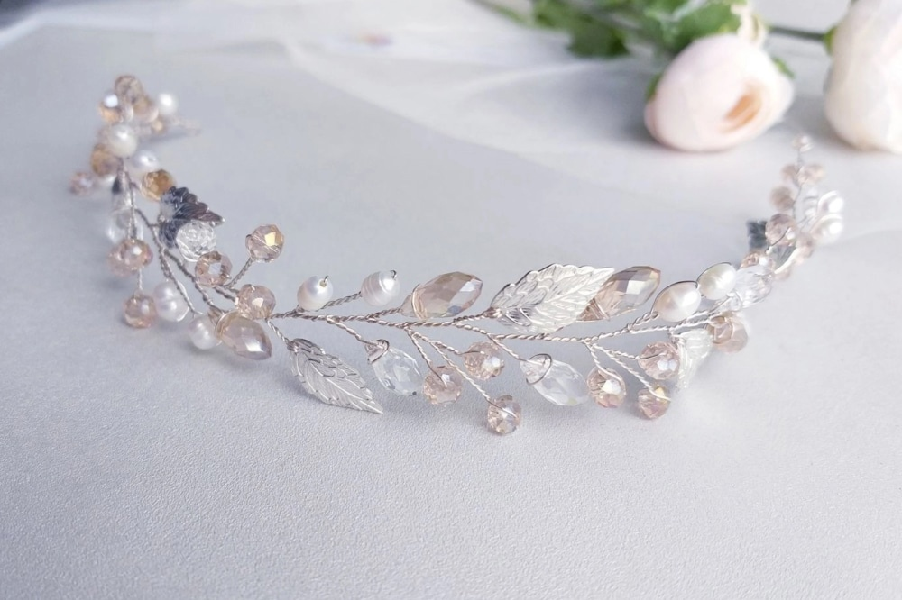
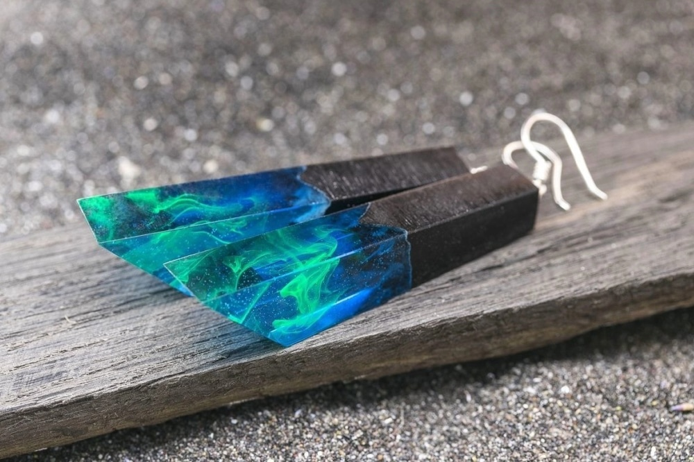
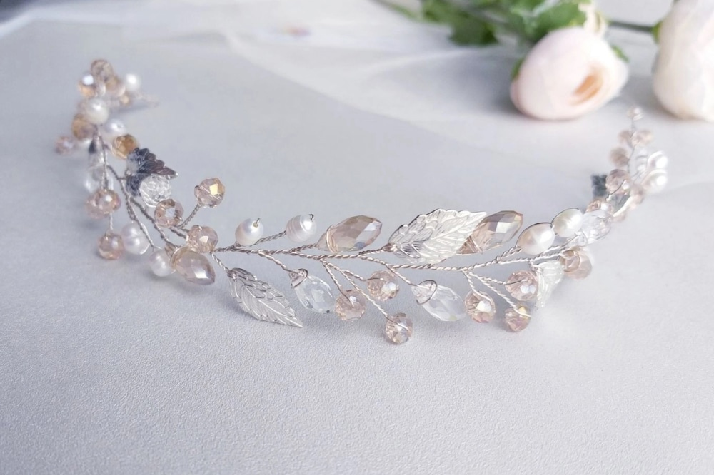
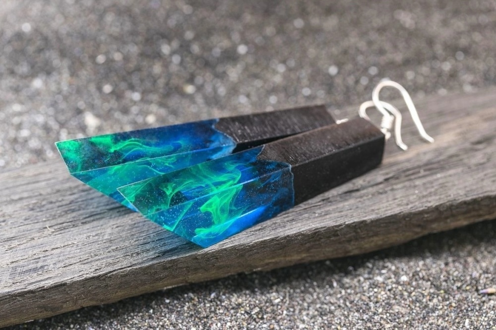
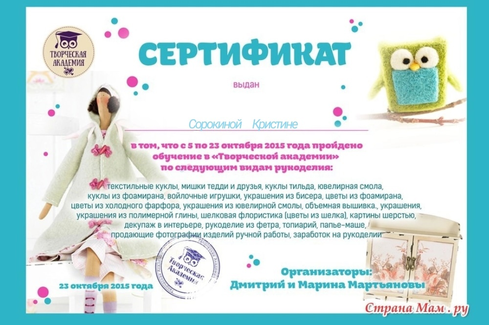
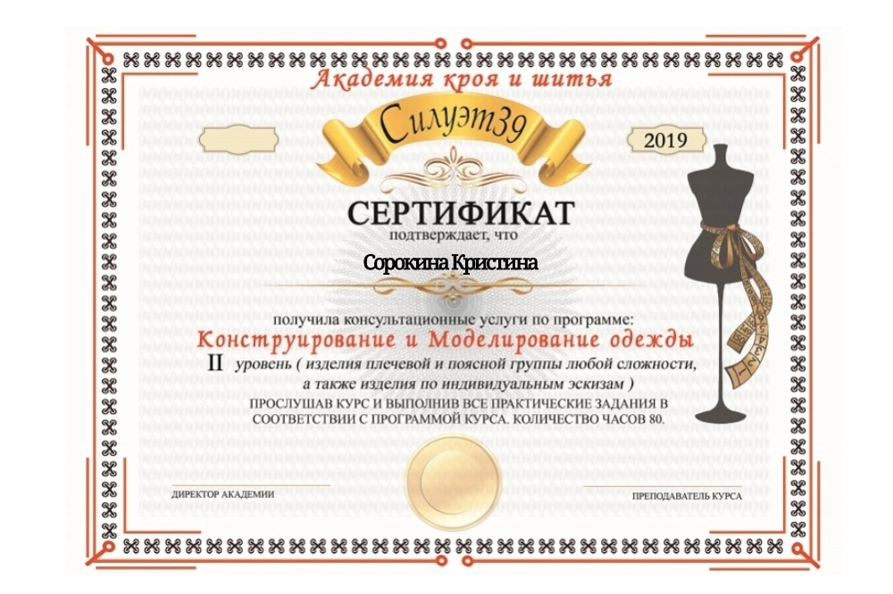
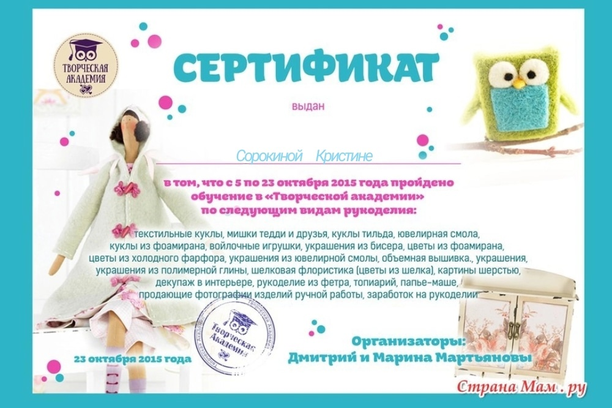
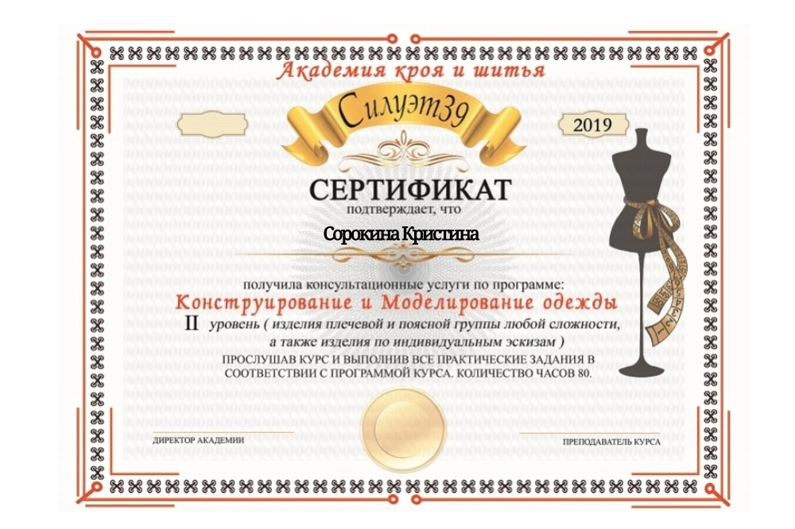

Что такое SK и как он появился?Идея создать свой интернет магазин возникла еще в 2017 году, но финансы не позволяли реализовать данную идею. После приобретения популярности в социальных сетях удалось собрать достаточно средств, чтобы реализовать мечту. Так в 2019 году на просторах интернета возник магазин "Sorokina Kristina". Благодаря его появлению большее количество пользователей может ознакомиться с изделиями, сделанными качественно собственными руками. |
 |
 
 


 


